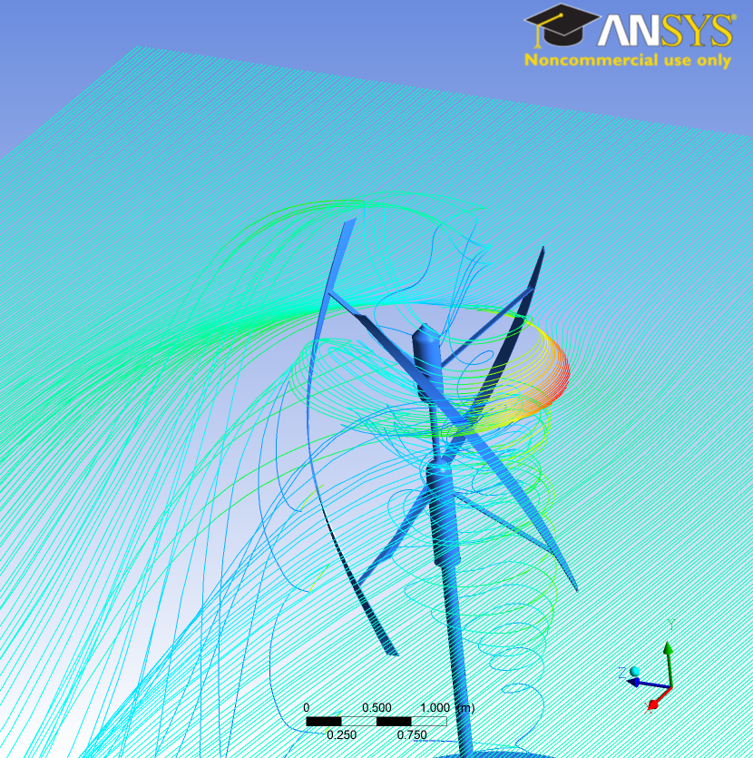
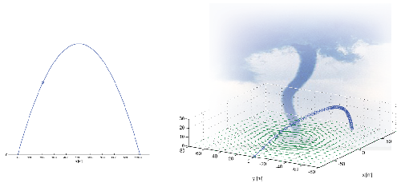
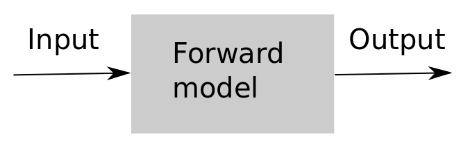
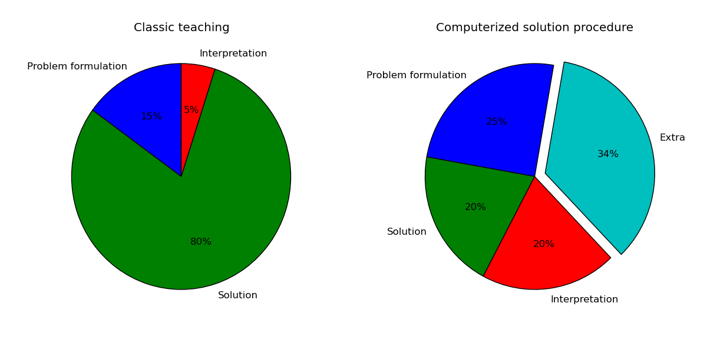
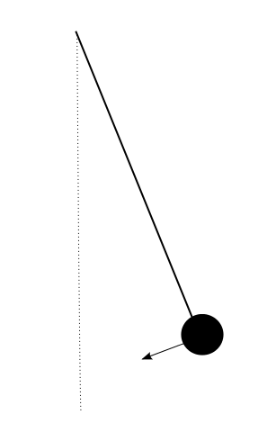

Computing in Science Education (CSE)
Aug 22, 2013
CSE is about deep integration of computing in the curriculum
|
Strong focus on IT in eduction, but...
CSE: Why not...
|
|

The science curriculum does not reflect reality
The computing reform is more central than ever
|
 |
|
|
Two paradigms: use software - or do programming?
- Great demand for candidates who master problem solving via programming
- We believe "programming is understanding"
"Programming is understanding" (K. Nygaard)
p1 = Polynomial({0: 1, 1: -1}) # 1 - x
p2 = Polynomial({1: 1, 4: -6, 5: -1}) # x - 6x^4 - x^5
p3 = p1 + p2 # shown in detail
p4 = p1*p2 # exercise
print p4 # x - x^2 - 6x^4 + 5x^5 + x^6
Everybody is drilled in polynomial multiplication,
$$(1-x)(1 - 6x^4 -x^5) = ... $$
but programming involves general polynomials (not specific ones!):
$$\left( \sum_{i=0}^M c_i x^i\right)\left(\sum_{j=0}^N d_j x^j\right)
= \sum_{i=0}^M \sum_{j=0}^N c_id_j x^{i+j} $$
Alan Perlis, computer scientist, 1922-1990
- "You think you know when you can learn,
- are more sure when you can write,
- even more when you can teach,
- but certain when you can program."
What we have learned about programming
- Lectures and exams must involve programming
- Programming must be a primary activity
- Recall: we learn what we do every day
Integration of mathematics, numerics, programming and simulation at the University of Oslo
Challenge: make impact on chemistry, geology and biology
Highlights of great results from the CSE project
|
From student projects:
|
|

Students are a great resource and have contributed much to the development CSE!
Many rewards of a successful CSE implementation
- Better motivation and understanding
- More realistic problems and workflow
- More operational: computationally proficient professionals
- Inspiring, renewed teaching environment - based on research
- More operational master and phd students
- Development of textbooks and material gives visibility
- Increased focus on teaching
- Teaching collaborations foster research initiatives
Computing provides generally applicable solution techniques

$$ P(A\cup B) = P(A) + P(B) - P(A\cap B)$$
With computing we can do more realistic problems

Computing emphasizes forward vs inverse modeling
|
What is the interest rate if an investment doubles in five years?
Fundamental model:
|
 |
Computing frees time for more focus on problem formulation and results

With computing complex is often simpler
|
 |
Original/fundamental model (DAE):
Parts of \( \boldsymbol{F} \) unknown, parts of \( \boldsymbol{r} \) known. Deformable rope gives a clean Newton's 2nd law:
|
How to get it all to work
- Need a collaborating and acknowledging culture among the professors
- Need enthusiasm at the top (deans) and bottom (teachers)
- Need support from strategy plans
- 50K award for reforming a course
Key people involved in running the CSE project
- Knut Mørken, Dept. of Mathematics
- Hanne Sølna, Faculty administration
- Annik Myhre, former Dean of Education
- Solveig Kristensen, Dean of Education
- Morten Hjorth-Jensen, Dept. of Physics
- Anders Malthe-Sørenssen, Dept. of Physics
- Øyvind Ryan, Dept. of Mathematics
- Hans Petter Langtangen, Dept. of Informatics and Simula lab.
- + lots of professors and students